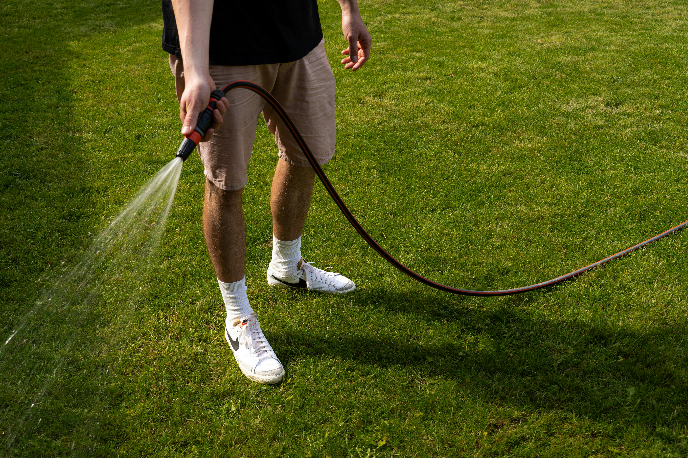

Hemos conseguido ahorrar más de 15.000 litros de agua en 2025; un 50% más de lo esperado
-
Uso de sensores
- Los sensores especiales de technIOS permiten la automatización en tiempo real de las condiciones de humedad del suelo, temperatura, viento...
-
Procesamiento de datos
- Con los datos obtenidos de los sensores se planifica la ruta de acción a seguir.
-
Ejecución de instrucciones
- Los sensores son actualizados en tiempo real y detectan cuándo encenderse o apagarse.
“ Sin la ayuda por parte del ayuntamiento no hubiéramos sido capaces de llevar a cabo esta solución.
Esperamos poder implementarlo en otros municipios en 2026. ’’
El ayuntamiento dispuso en 2023 un presupuesto de 80.000 euros a la Universitat de València para la automatización de los campos de cultivo que rodean la ciudad en base a los objetivos de desarrollo sostenible propuestos por la alcaldía.
El equipo de profesionales, compuesto a la cabeza por Tobías Martínez Pérez, han desarrollado una solución inteligente capaz de conseguir un ahorro masivo en el agua consumida. Originalmente se esperaba ahorrar 10.000 litros pero se han conseguido guardar 15.000; ¡un aumento del 50% respecto de lo previsto!

El equipo de investigadores mantuvo una estrecha colaboración con la empresa technIOS, la cual proporcionó todo el material necesario y les ayudó con todas las cuestiones que fueron surgiendo en el desarrollo. También, según destaca su responsable, fue esencial la colaboración de recién graduados que aportaron ideas y visiones frescas e innovadoras.
Tras el éxito del proyecto el equipo busca ampliar sus metas a diferentes municipios; ya han recibido varias ofertas por valor de 100.000 euros y están contratando a nuevo personal. Desde el ayuntamiento sólo les podemos desear que consigan hacer un trabajo tan excelente como lo hicieron aquí.